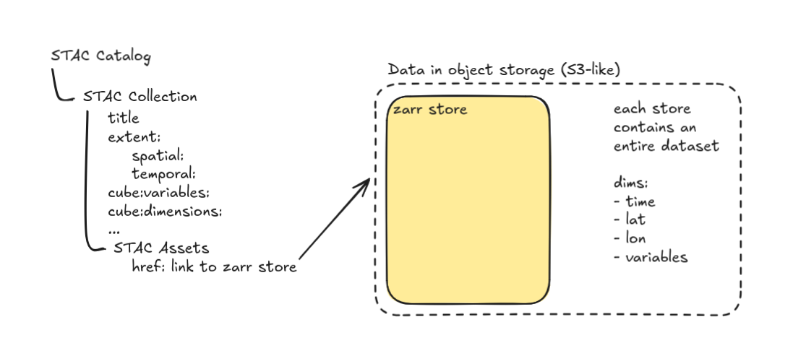
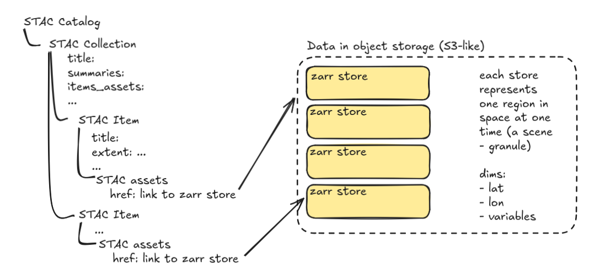
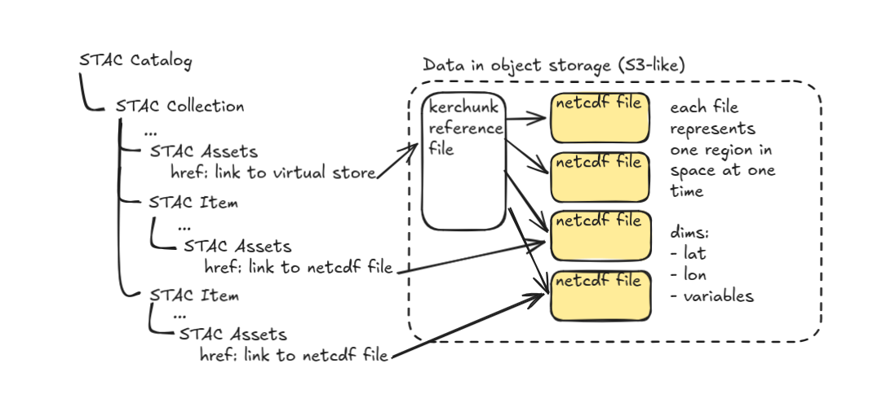

Zarr + STAC for Data Producers
Approaches to structuring your data cubes using Zarr + STAC
This section is targeted at people who are trying to disseminate data cubes. It addresses questions like:
- Should you use STAC?
- Should you use Zarr?
- Where should Zarr stores go in your STAC catalog?
- How much metadata should you pull up out of the Zarr dataset?
- How to pull metadata out of Zarr?
Should you use STAC?
Since this is explicitly a geospatial guide, your data is probably spatial-temporal. In that case you should use STAC! STAC is a flexible specification for describing your datasets that allows people to search for and discover datasets of interest.
STAC has seen wide adoption across many different scales of data producers including large government efforts like Landsat. This adoption has spurred a rich ecosystem of STAC tools from python client libraries to QGIS integrations.
Should you use Zarr?
Before we really get into it, it is helpful to consider the data that you are trying to disseminate. When we say data cubes we tend to mean well-aligned high-dimensional data. If your data is not well-aligned – for instance Level 1 or Level 2 satellite imagery, then you might not want to use Zarr at all.
In the case of un-aligned data, you are likely well-served by using single-band COGs stored as STAC assets on STAC items where each item represents one scene. This setup is well-understood and well-supported by existing technology. Additionally the ability to virtually point to remote chunks on disk (using a reference file spec like kerchunk or data store spec like icechunk) enables Zarr-like access regardless of the actual file format. If you do want to use Zarr then you should use the Many smaller Zarr stores approach outlined below.
If your data is aligned as a data cube, for instance Level 3 or Level 4 data, then it is well suited to Zarr. In order to design and implement metadata for your Zarr store and any associated STAC metadata, it is important to consider the use case priorities for your dataset.
What are your highest priorities?
It’s usually not possible to optimize for all benefits at the same time. That’s why we recommend picking out a few of your highest priorities. Examples include:
- Streamline variable-level discovery for web-based users.
- Integrate with existing tools and workflows.
- Enable the simplest possible access patterns for users from
<insert-programming-language> - Enable web-based visualization of large-scale multi-dimensional datasets.
- Minimize the number of GET requests for accessing large-scale multi-dimensional datasets.
- Minimize data transfer for accessing subsets of large-scale multi-dimensional datasets.
- Minimize the amount of infrastructure required to maintain the catalog.
- Minimize the cost/time of generating the catalog.
- Limit who can read from the dataset without limiting who can inspect the metadata.
For each of these examples, prioritizing one over the other impacts how much effort you dedicate to abstracting metadata into the STAC catalog. Your choices will also impact the number of GET requests needed for common access patterns and the amount of data transferred.
For instance if you want to minimize the amount of infrastructure required to maintain a catalog then you might abstract very little metadata from Zarr into STAC. But that means that people need to access the metadata within the Zarr groups themselves which requires more GETs.
Options
Given your priorities, how should you structure the division between what metadata belongs in STAC and what belongs in Zarr? To a certain extent it depends on the shape of your data.
One big Zarr store + basic STAC collection metadata
If you have aligned data cubes Level 3 and 4 data or groups of data cubes that tend to be global in scale (for instance CMIP6 data or ERA5) then you will want to use this approach.

At a minimum this setup looks like:
- Create a Zarr store for each dataset (i.e., set of data collected using the same platform, algorithms, model, etc)
- Define a STAC collection for each Zarr dataset.
- In each collection include a collection-level asset containing the href link to the Zarr store.
Pros
- There is no metadata duplication so the STAC side is easy to maintain.
- Simple access interface for Python users - no client-side concatenation.
Cons
- Potentially many GETs to construct the data cube if there is no consolidated metadata file.
- Data variables are not exposed at the STAC level, so users cannot discover relevant datasets by searching for variables.
One big Zarr store + STAC metadata about what is in the Zarr store
Same as above but with the additional step:
- Write variable metadata about the groups up into the STAC collection as collection-level metadata using the Data Cube Extension.
Pros
- Data variables are exposed at the STAC level, so users can discover relevant datasets by searching for variables.
- Simple access interface for Python users - no client-side concatenation.
Cons
- Potentially many GETs to construct the data cube if there is no consolidated metadata file.
- Metadata is duplicated, but it is variable-level so unlikely to change often.
One big Zarr store + STAC metadata about nested groups
This applies to datasets that consist of nested groups of arrays.
- Include collection-level Link Templates for each subgroup in the Zarr store
Pros
- Data variables are exposed at the STAC level, so users can discover relevant datasets by searching for variables.
- Simple access interface for Python users - no client-side concatenation.
- Access subgroups directly without any GETs to the data store.
Cons
- Metadata is duplicated, but it is group-level and variable-level so unlikely to change often.
Many smaller Zarr stores
This mimics the common STAC + COG approach but instead of a COG for each band at each scene there is a Zarr store for the whole scene.

At a minimum this looks like:
- Create a Zarr store for each dataset (i.e., set of data collected using the same platform, algorithms, model, etc) at a particular time and place
- Define a STAC collection for each dataset.
- Define a STAC item for each unique spatial temporal extent within that dataset.
- In each STAC item include one asset with an href link to the Zarr containing that data.
Pros
- Spatial temporal extents are exposed at the STAC level, so users can find data covering their region of interest without accessing the data files themselves.
- When only accessing necessary items, fewer GETs to construct the data cube.
Cons
- Data variables are not exposed at the STAC level, so users cannot discover relevant datasets by searching for variables.
- User is responsible for aligning and concatenating data which can be slow and error-prone.
Many smaller Zarr stores - some STAC medatata
Same as above but with the additional step:
- Write metadata summaries and
item_assetson the STAC collection.
Pros
- Data variables are exposed at the STAC level, so users can discover relevant datasets by searching for variables.
- Spatial temporal extents are exposed at the STAC level, so users can find data covering their region of interest without accessing the data files themselves.
- When only accessing necessary items, fewer GETs to construct the data cube.
Cons
- Metadata is duplicated, but it is variable-level so unlikely to change often.
- User is responsible for aligning and concatenating data which can be slow and error-prone.
Many smaller Zarr stores - most STAC metadata
In this setup all the metadata about variables in every Zarr store are exposed at the STAC-level.
- Write metadata on the STAC item using the Data Cube Extension.
Pros
- Data variables are exposed at the STAC level, so users can discover relevant datasets by searching for variables.
- Spatial temporal extents are exposed at the STAC level, so users can find data covering their region of interest without accessing the data files themselves.
- When only accessing necessary items, fewer GETs to construct the data cube.
Cons
- Metadata is fully duplicated which can be expensive to maintain and potentially lead to inconsistencies if the underlying data is changed
- User is responsible for aligning and concatenating data which can be slow and error-prone.
Virtual dataset in an external file
This is similar to One big Zarr store with the exception that data does not need to be stored in a Zarr store. It can be stored in any number of COG or NetCDF or HDF5 files. Anything that has consistent chunking, encoding, and aligned coordinates on-disc.

- Create a virtual reference file (kerchunk) or store (icechunk) pointing to chunks of data on-disc.
- Define a STAC collection for each virtual dataset.
- In each collection include a collection-level asset containing the href link to the virtual reference file.
- Define a STAC item for each file referenced by the virtual datasets containing one asset with an href link to the legacy file containing that data.
Pros
- There is no metadata duplication in STAC, so the STAC side is easy to maintain.
- Simple access interface for Python users - no client-side concatenation.
- Entire data cube can be lazily constructed with one GET to the reference file or store.
- Data stays in its original file format - no data duplication.
Cons
- Data variables are not exposed at the STAC level, so users cannot discover relevant datasets by searching for variables.
- Virtual reference file needs to be kept in sync with updates in the underlying data which can be expensive to maintain.
- Non-Python access is less well developed.
Virtual dataset in an external file - more STAC metadata
Same as above but with the additional step:
- Write STAC item metadata using the Data Cube Extension.
Pros
- Data variables are exposed at the STAC level, so users can discover relevant datasets by searching for variables.
- Simple access interface for Python users - no client-side concatenation.
- Entire data cube can be lazily constructed with one GET to the reference file.
Cons
- Metadata is duplicated, but it is variable-level so unlikely to change often.
- Virtual reference file needs to be kept in-sync with updates in the underlying data which can be expensive to maintain.
- Non-Python access is less well developed.
Virtual dataset in STAC - most STAC metadata
This is the most experimental approach. It is similar to the one above but instead of a separate reference file the whole chunk manifest is contained within STAC.
- Create virtual references (kerchunk) pointing to chunks of data on-disc.
- Define a STAC collection for each virtual dataset.
- Define a STAC item for each spatial-temporal chunk within that dataset.
- In each STAC item include one asset for each variable with an href link to a chunk of data on-disc and a property containing the kerchunk reference.
Pros
- Simple access interface for Python users - no client-side concatenation.
- Data variables are exposed at the STAC level, so users can discover relevant datasets by searching for variables.
- Entire data cube can be lazily constructed directly from STAC response.
- Data stays in its original file - no data duplication.
Cons
- This is the most verbose option, so it likely to not work well with static STAC except when using stac-geoparquet.
- Virtual references needs to be kept in-sync with updates in the underlying data which can be expensive to maintain.
- Non-Python access is less well-developed.
How to pull STAC metadata out of Zarr
Once you have decided how to structure your Zarr stores you can use xstac to write the metadata to STAC. To use xstac you just need to load you Zarr store into xarray and xstac will:
- Expose variables to STAC using Data Cube Extension
- Include kwargs that let xarray know how to open the dataset xarray extension
- Get the spatial-temporal extents of the data
Some other things to keep in mind when you are writing STAC metadata:
- Take advantage of inheritance to reduce duplication at the item and asset levels.
- Take advantage of roles to make it clear which assets should be included in a data cube.
- If you are using many small Zarr stores, consider providing a virtual reference file to make the intended stacking explicit